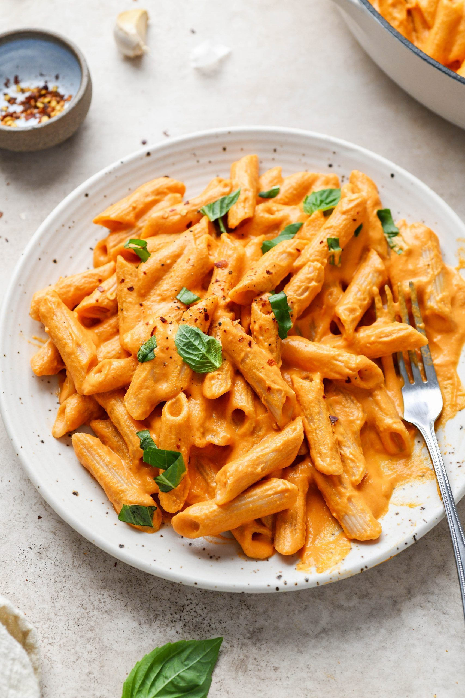

Tomato Penne Pasta Recipe

Penne With Tomato Sauce
Penne is one of the most famous Italian pasta shapes and is loved across Italy and the world.It is time for you to try it and savour the taste of the best pasta in the world.
Ingredients (for 4 servings)
- 2 tablespoons olive oil
- ½ medium onion, finely diced
- ½ teaspoon red chili flakes
- 1 clove garlic, minced
- 14 oz crushed tomato(395 g), 1 can
- salt, to taste
- ½ lb penne pasta(225 g)
Steps to Prepare This Delicacy
- Heat a large sauté pan over medium heat. Add the olive oil and onion, and cook until the onion is translucent, 8-10 minutes.
- Add the chile flakes and garlic, and cook for another 2 minutes, until fragrant. Stir in tomatoes and simmer uncovered for 20 minutes.
- Bring a large pot of salted water to a boil. Cook the pasta according to package instructions. Save ½ cup (120 ml) of pasta water, then drain.
- Add the drained pasta to the sauce. Stir well, adding a little pasta water if needed to loosen the sauce. Season with salt to taste.
- Enjoy!